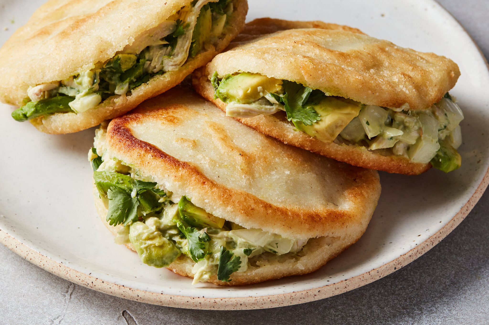

Home
Arepas Recipe

Arepas are small grilled corn cakes and are native to Venezuela and Colombia. They can be eaten plain or stuffed with meats, cheeses, beans and vegetables. Sugar can be added to
create a sweet cake which can be used for dessert.
Ingredients
- 2 ½ cups milk
- 1 ½ cups arepas flour (such as P.A.N.®)
- ½ cup grated Monterey Jack cheese
- 1 teaspoon kosher salt
- ½ teaspoon freshly ground black pepper
- ¼ cup unsalted butter, cut into pieces
- 1 tablespoon honey
- vegetable oil
Steps
- Bring milk to a simmer in a pot. Remove from heat and stir in butter.
- Combine arepas flour, grated Monterey Jack cheese, kosher salt, and black pepper in a large bowl. Add the hot milk mixture and honey; stir until combined. Let mixture sit until milk is absorbed enough for a soft dough to form, 1 to 2 minutes. Dough will continue to stiffen.
- Form dough into 12 balls about 2 inches in diameter. Flatten between palms into 3 1/2- to 4-inch arepa patties about 1/3-inch thick.